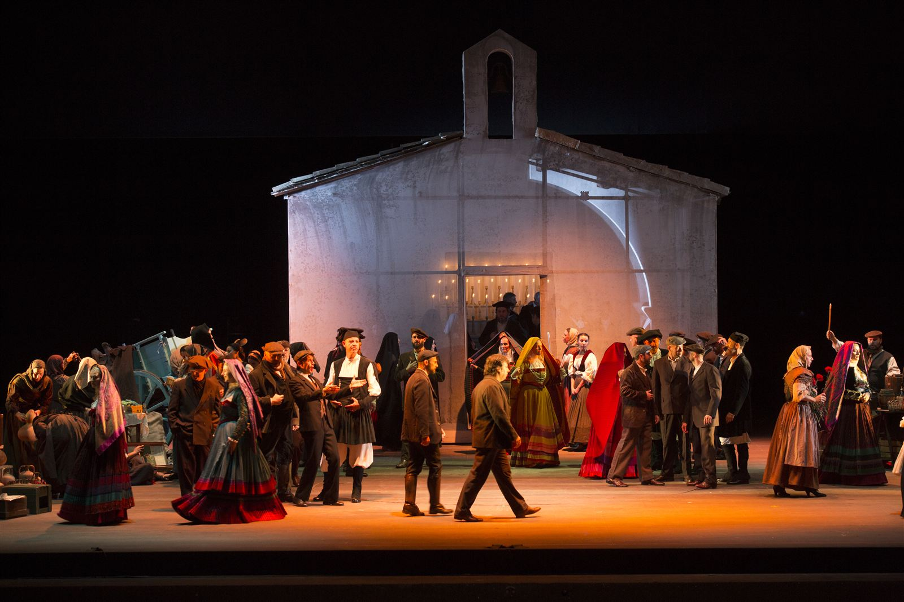
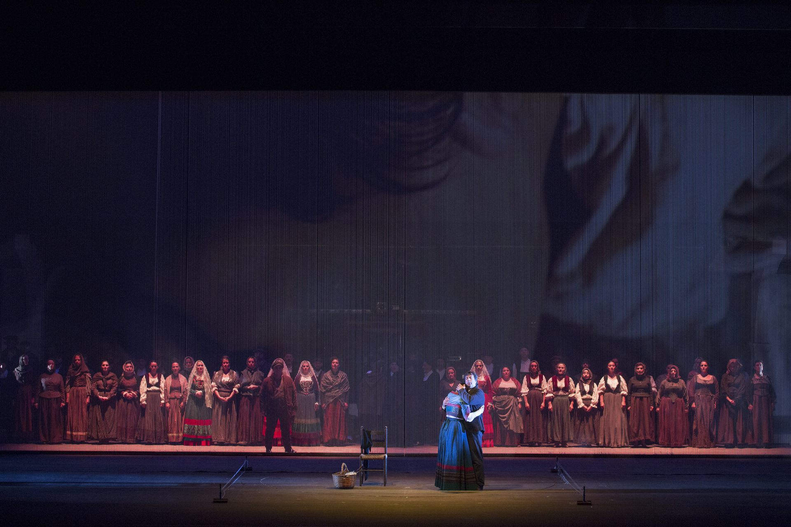
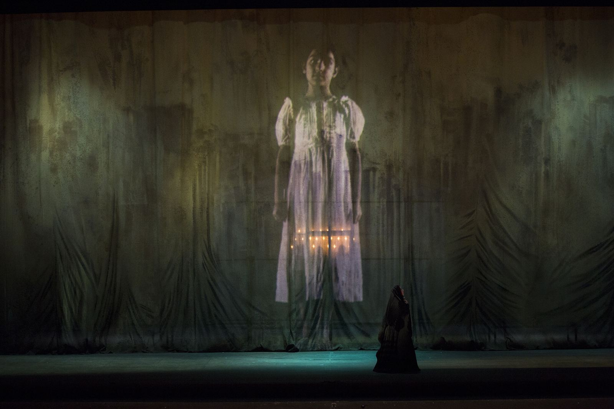
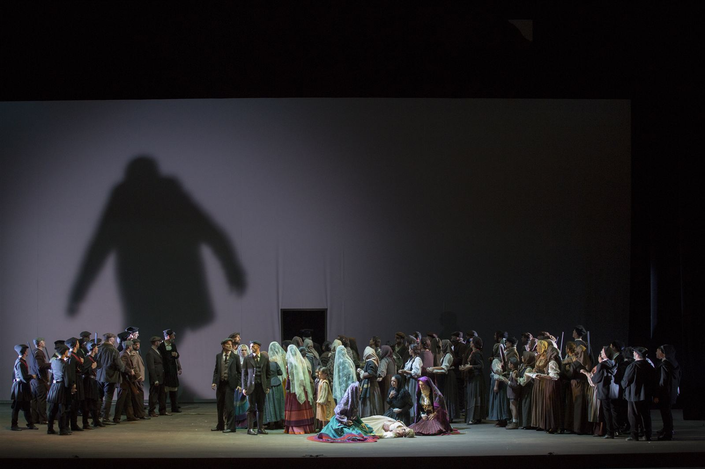
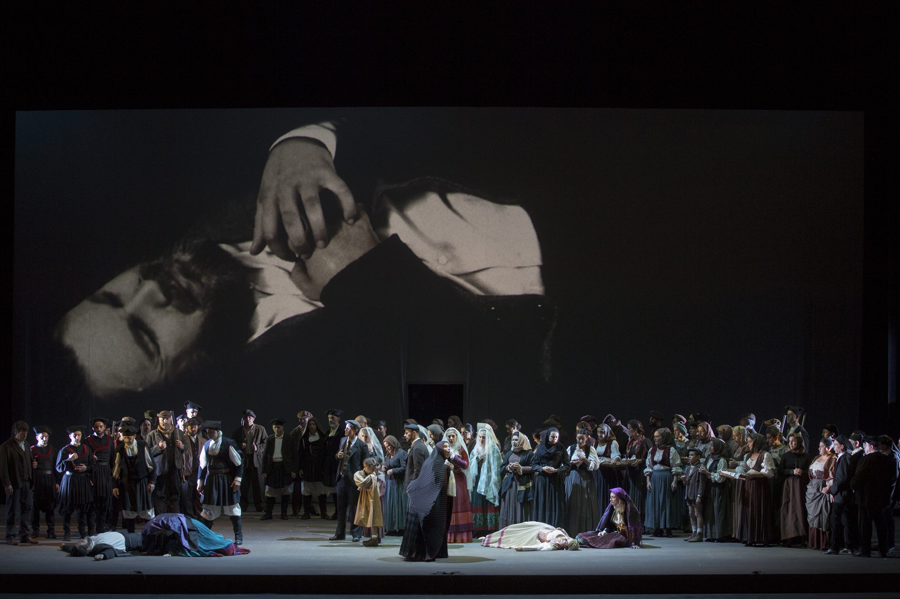
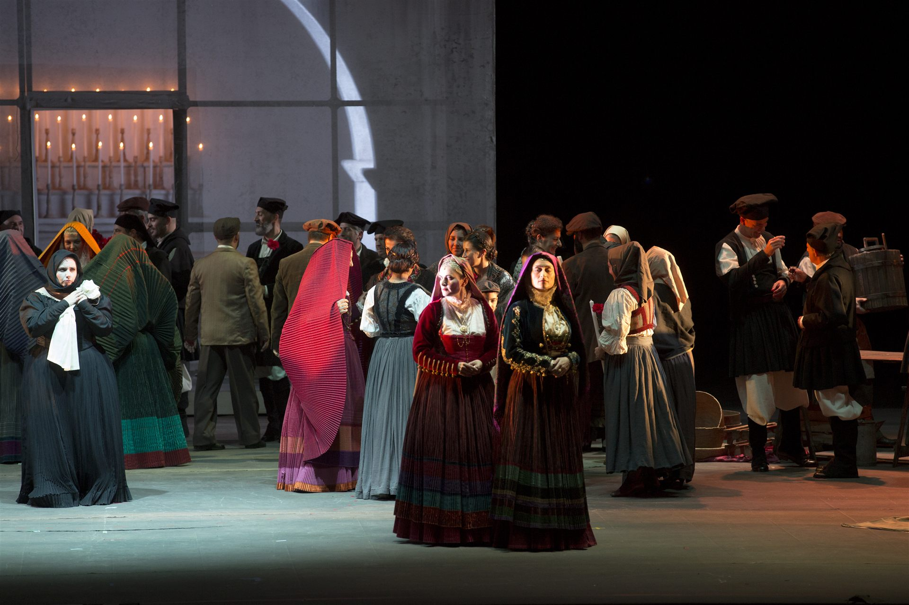
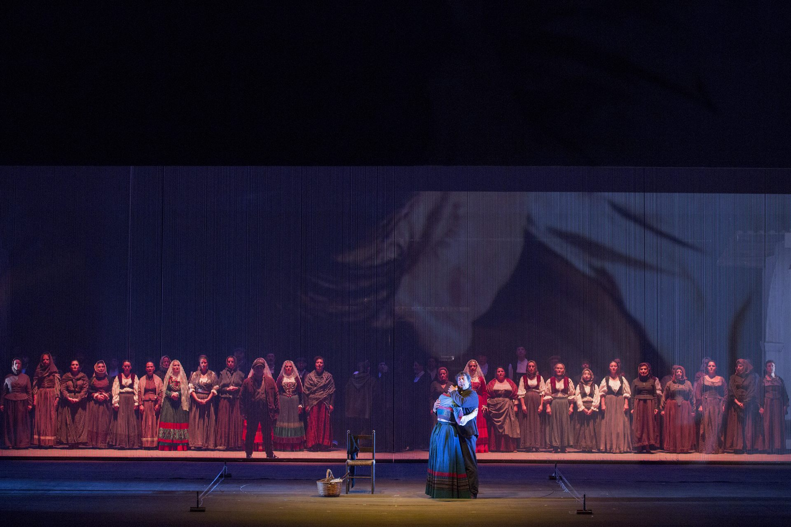

Prima esecuzione assoluta dell’ultima versione della partitura (1959) de La Jura di Gavino Gabriel (1881–1980), edizione critica a cura di Susanna Pasticci. Cinque quadri di vita gallurese — sagra, conche, fontana, pricunta, zidda — in cui lo spazio non contiene l’azione ma la determina, e un’intera comunità diventa protagonista del dramma. La regia, le scene e i costumi di Cristian Taraborrelli fondono tradizione e contemporaneità, con la videoscenografia di Fabio Massimo Iaquone che rende visibile il desiderio inespresso dei personaggi.
World premiere of the final version of the score (1959) of La Jura by Gavino Gabriel (1881–1980), critical edition by Susanna Pasticci. Five tableaux of Gallurese life — sagra, conche, fontana, pricunta, zidda — where space doesn’t merely contain the action but determines it, and an entire community becomes the protagonist of the drama. Direction, sets and costumes by Cristian Taraborrelli blend tradition and contemporaneity, with Fabio Massimo Iaquone’s video scenography making visible the characters’ unexpressed desires.
Première mondiale de la version définitive de la partition (1959) de La Jura de Gavino Gabriel (1881–1980), édition critique de Susanna Pasticci. Cinq tableaux de vie gallurese — sagra, conche, fontana, pricunta, zidda — où l’espace ne contient pas l’action mais la détermine, et toute une communauté devient protagoniste du drame. La mise en scène, les décors et les costumes de Cristian Taraborrelli mêlent tradition et contemporanéité, avec la vidéoscénographie de Fabio Massimo Iaquone rendant visible le désir inexprimé des personnages.
L’Opera — Un capolavoro sardo riscoperto
Gavino Gabriel (Tempio Pausania, 1881 – Roma, 1980) lavorò a La Jura per oltre mezzo secolo, dalla prima stesura intorno al 1905 fino alla versione definitiva completata il 18 settembre 1959. L’opera racconta cinque quadri di vita gallurese ambientati nella comunità di Aggius tra il 1820 e il 1830: l’amore impossibile tra il poeta pastore Cicciottu Jacòni e Anna, la cui mano è promessa dal padre Gjompaulu Filianu al ricco pastore Burédda. La jura — antico giuramento ordalico sardo — lega i destini dei personaggi in un dramma dove la comunità intera, con i suoi rituali e i suoi luoghi, diventa la vera protagonista.
La partitura, estranea a ogni modello accademico, nasce dalla rielaborazione dei patrimoni musicali di tradizione orale della Gallura. L’allestimento del 2015 al Teatro Lirico di Cagliari è la prima esecuzione assoluta della versione definitiva della partitura, nell’edizione critica curata dalla musicologa Susanna Pasticci.
Gavino Gabriel (Tempio Pausania, 1881 – Rome, 1980) worked on La Jura for over half a century, from the first draft around 1905 to the definitive version completed on 18 September 1959. The opera portrays five tableaux of Gallurese life set in the community of Aggius between 1820 and 1830: the impossible love between the shepherd-poet Cicciottu Jacòni and Anna, whose hand is promised by her father Gjompaulu Filianu to the wealthy shepherd Burédda. The jura — an ancient Sardinian ordeal oath — binds the characters’ fates in a drama where the entire community, with its rituals and places, becomes the true protagonist.
The score, entirely foreign to academic models, springs from the reworking of the oral musical traditions of Gallura. The 2015 staging at the Teatro Lirico di Cagliari is the world premiere of the definitive version of the score, in the critical edition by musicologist Susanna Pasticci.
Gavino Gabriel (Tempio Pausania, 1881 – Rome, 1980) travailla sur La Jura pendant plus d’un demi-siècle, du premier jet vers 1905 à la version définitive achevée le 18 septembre 1959. L’opéra dépeint cinq tableaux de vie gallurese situés dans la communauté d’Aggius entre 1820 et 1830 : l’amour impossible entre le poète berger Cicciottu Jacòni et Anna, dont la main est promise par son père Gjompaulu Filianu au riche berger Burédda. La jura — ancien serment ordalique sarde — lie les destins des personnages dans un drame où la communauté entière, avec ses rituels et ses lieux, devient la véritable protagoniste.
La partition, étrangère à tout modèle académique, naît de la réélaboration des patrimoines musicaux de tradition orale de la Gallura. La production de 2015 au Teatro Lirico di Cagliari est la première mondiale de la version définitive de la partition, dans l’édition critique de la musicologue Susanna Pasticci.
La Visione
I personaggi della vicenda sono immersi in una Sardegna che ricorda gli anni ’60, periodo in cui la modernità e la tradizione incominciavano a convivere. La scenografia è dinamica, segue l’andamento quasi cinematografico della scrittura di Gabriel. I costumi rievocano linee e motivi della tradizione, ma rielaborati in chiave pittorica, giocando con i chiaroscuri e gli accenti delle tinte accese.
Il video, telecamera nascosta dell’animo, è la concretizzazione del desiderio inespresso, delle passioni soffocate. Nel secondo quadro, i corpi e i volti dei due giovani amanti si sfiorano, si cercano, si toccano sullo schermo — ciò che sulla scena è interdetto avviene virtualmente nella proiezione. Nell’ultimo quadro, un immenso telaio di nove chilometri e mezzo di fili elastici imprigiona Anna al suo destino, mentre le donne stendono gli orditi come le parche della tragedia greca.
The characters are immersed in a Sardinia reminiscent of the 1960s, when modernity and tradition were beginning to coexist. The set design is dynamic, following the almost cinematic pace of Gabriel’s writing. The costumes evoke lines and motifs from tradition, reworked in a painterly key, playing with chiaroscuro and the accents of vivid hues.
Video, a hidden camera of the soul, is the materialisation of unexpressed desire, of stifled passions. In the second tableau, the bodies and faces of the two young lovers brush, seek, and touch each other on screen — what is forbidden on stage happens virtually in the projection. In the final tableau, an immense loom of nine and a half kilometres of elastic threads imprisons Anna to her fate, while the women stretch the warp like the Fates of Greek tragedy.
Les personnages sont plongés dans une Sardaigne qui rappelle les années 1960, époque où modernité et tradition commençaient à coexister. La scénographie est dynamique, suit le rythme quasi cinématographique de l’écriture de Gabriel. Les costumes évoquent les lignes et les motifs de la tradition, réélaborés dans un registre pictural, jouant avec les clairs-obscurs et les accents des teintes vives.
La vidéo, caméra cachée de l’âme, est la concrétisation du désir inexprimé, des passions étouffées. Dans le deuxième tableau, les corps et les visages des deux jeunes amants se frôlent, se cherchent, se touchent à l’écran — ce qui est interdit sur scène advient virtuellement dans la projection. Dans le dernier tableau, un immense métier à tisser de neuf kilomètres et demi de fils élastiques emprisonne Anna dans son destin, tandis que les femmes tendent les chaînes comme les Parques de la tragédie grecque.
Curiosità
Mezzo secolo di composizione. Gabriel lavorò a La Jura dal 1905 al 1959. Dopo ogni rappresentazione riscriveva la partitura, inseguendo una perfezione che lo accompagnò fino alla fine della sua lunghissima vita (99 anni).
Il giradischi in scena. Taraborrelli riprende un’idea dello stesso Gabriel per l’allestimento al San Carlo nel 1958: la Disispirata, canto d’amore tradizionale, esce da un vecchio giradischi portato in scena, spezzando la narrazione orchestrale con un dispositivo meccanico del ’900.
9,5 km di fili elastici. L’ultimo quadro è un immenso telaio fatto di chilometri e mezzo di fili elastici bianchi che imprigionano Anna al suo destino, evocando le trame fatali delle parche della tragedia greca e il celebre Telaio dell’artista sarda Maria Lai.
Citazioni futuriste. Nel secondo quadro Taraborrelli cita due opere futuriste: una fotodinamica di Bragaglia — cui sostituisce il volto di Anna — e La bambina che corre sul balcone (1912) di Balla, per evocare la figlia scomparsa di Pasca.
Half a century of composition. Gabriel worked on La Jura from 1905 to 1959. After every performance he rewrote the score, pursuing a perfection that accompanied him until the end of his extraordinarily long life (99 years).
The gramophone on stage. Taraborrelli revives an idea from Gabriel himself for the 1958 San Carlo staging: the Disispirata, a traditional love song, emerges from an old gramophone brought on stage, breaking the orchestral narrative with a twentieth-century mechanical device.
9.5 km of elastic threads. The final tableau is an immense loom made of nine and a half kilometres of white elastic threads that imprison Anna to her fate, evoking the deadly threads of the Greek Fates and the celebrated Telaio by Sardinian artist Maria Lai.
Futurist citations. In the second tableau Taraborrelli cites two Futurist works: a photodynamic by Bragaglia — replacing the face with Anna’s — and Balla’s Girl Running on a Balcony (1912), to evoke Pasca’s lost daughter.
Un demi-siècle de composition. Gabriel travailla sur La Jura de 1905 à 1959. Après chaque représentation il réécrivait la partition, poursuivant une perfection qui l’accompagna jusqu’à la fin de sa très longue vie (99 ans).
Le gramophone sur scène. Taraborrelli reprend une idée de Gabriel lui-même pour la mise en scène au San Carlo en 1958 : la Disispirata, chant d’amour traditionnel, sort d’un vieux gramophone apporté sur scène, brisant la narration orchestrale avec un dispositif mécanique du XXe siècle.
9,5 km de fils élastiques. Le dernier tableau est un immense métier à tisser de neuf kilomètres et demi de fils élastiques blancs qui emprisonnent Anna dans son destin, évoquant les trames fatales des Parques grecques et le célèbre Telaio de l’artiste sarde Maria Lai.
Citations futuristes. Dans le deuxième tableau, Taraborrelli cite deux œuvres futuristes : une photodynamique de Bragaglia — remplaçant le visage par celui d’Anna — et La fillette courant sur le balcon (1912) de Balla, pour évoquer la fille disparue de Pasca.
Galleria








Video
Stampa & Critica
“Il dispositivo videoscenografico aumenta l’atmosfera onirica e visionaria non solo di questa situazione, ma dell’intero spettacolo.”
“The video-scenic device heightens the dreamlike and visionary atmosphere not only of this scene, but of the entire production.”
— Bruno Di Marino, “Nel cuore del Novecento”, Programma di Sala, Teatro Lirico di Cagliari, 2015« Le dispositif vidéoscénographique renforce l’atmosphère onirique et visionnaire non seulement de cette scène, mais de l’ensemble du spectacle. »
Interpreti
Team Creativo
Nuova produzione del Teatro Lirico di Cagliari, realizzata con il contributo della Regione Autonoma della Sardegna
Tag